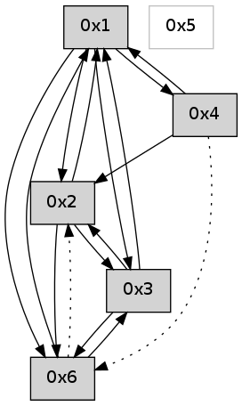

>> << IDX [start] -100 -25 -5 +0 +5 +25 +100 [575.006749153]
 Previous packets
----------------------------------------------------------------------
570.010873 beacon01(adaf) #0 coord=01,02,05,03,04,06 cycle=432.0ms assoc
-- color-indic=0 64 b6 77
570.020834 beacon02(adaf) #0 coord=01,02,05,03,04,06 cycle=432.0ms assoc 64 e7 88
570.030834 beacon05(adaf) #0 coord=01,02,05,03,04,06 cycle=432.0ms assoc 64 41 a2
570.040834 beacon03(adaf) #0 coord=01,02,05,03,04,06 cycle=432.0ms assoc 64 dd 86
570.050834 beacon04(adaf) #0 coord=01,02,05,03,04,06 cycle=432.0ms assoc 64 7b ac
570.060834 beacon06(adaf) #0 coord=01,02,05,03,04,06 cycle=432.0ms assoc 64 0f b0
570.072508 [Hello(4): seq=370 sym=6,1,2 sysInfo= stat=6:11,0,0,0/1:4,0,0,0/2:4,0,0,0]
570.076251 [Hello(1): seq=269 sym=2,6,3,4 sysInfo= stat=2:12,0,0,0/6:1,0,0,0/3:0,0,0,0/4:0,0,0,0]
----------------------------------------------------------------------
570.502983 beacon01(adaf) #0 coord=01,02,05,03,04,06 cycle=432.0ms assoc
-- color-indic=0 64 72 18
570.512944 beacon02(adaf) #0 coord=01,02,05,03,04,06 cycle=432.0ms assoc 64 23 e7
570.522944 beacon05(adaf) #0 coord=01,02,05,03,04,06 cycle=432.0ms assoc 64 85 cd
570.532944 beacon03(adaf) #0 coord=01,02,05,03,04,06 cycle=432.0ms assoc 64 19 e9
570.542943 beacon04(adaf) #0 coord=01,02,05,03,04,06 cycle=432.0ms assoc 64 bf c3
570.552947 beacon06(adaf) #0 coord=01,02,05,03,04,06 cycle=432.0ms assoc 64 cb df
570.564610 [Hello(2): seq=865 sym=6,1,3 sysInfo= stat=6:0,0,0,0/1:3,0,0,0/3:8,0,0,0]
----------------------------------------------------------------------
570.995091 beacon01(adaf) #0 coord=01,02,05,03,04,06 cycle=432.0ms assoc
-- color-indic=0 64 3f 1f
571.005051 beacon02(adaf) #0 coord=01,02,05,03,04,06 cycle=432.0ms assoc 64 6e e0
571.015053 beacon05(adaf) #0 coord=01,02,05,03,04,06 cycle=432.0ms assoc 64 c8 ca
571.025053 beacon03(adaf) #0 coord=01,02,05,03,04,06 cycle=432.0ms assoc 64 54 ee
571.035053 beacon04(adaf) #0 coord=01,02,05,03,04,06 cycle=432.0ms assoc 64 f2 c4
571.045054 beacon06(adaf) #0 coord=01,02,05,03,04,06 cycle=432.0ms assoc 64 86 d8
571.056500 [Hello(1): seq=270 sym=2,6,3,4 sysInfo= stat=2:13,0,0,0/6:1,0,0,0/3:0,0,0,0/4:0,0,0,0]
571.060386 [Hello(4): seq=371 sym=6,1,2 sysInfo= stat=6:12,0,0,0/1:5,0,0,0/2:4,0,0,0]
----------------------------------------------------------------------
571.487198 beacon01(adaf) #0 coord=01,02,05,03,04,06 cycle=432.0ms assoc
-- color-indic=0 64 fb 70
571.497158 beacon02(adaf) #0 coord=01,02,05,03,04,06 cycle=432.0ms assoc 64 aa 8f
571.507160 beacon05(adaf) #0 coord=01,02,05,03,04,06 cycle=432.0ms assoc 64 0c a5
571.517160 beacon03(adaf) #0 coord=01,02,05,03,04,06 cycle=432.0ms assoc 64 90 81
571.527159 beacon04(adaf) #0 coord=01,02,05,03,04,06 cycle=432.0ms assoc 64 36 ab
571.537161 beacon06(adaf) #0 coord=01,02,05,03,04,06 cycle=432.0ms assoc 64 42 b7
571.548824 [Hello(2): seq=866 sym=6,1,3 sysInfo= stat=6:0,0,0,0/1:4,0,0,0/3:8,0,0,0]
----------------------------------------------------------------------
571.979306 beacon01(adaf) #0 coord=01,02,05,03,04,06 cycle=432.0ms assoc
-- color-indic=0 64 b7 c0
571.989267 beacon02(adaf) #0 coord=01,02,05,03,04,06 cycle=432.0ms assoc 64 e6 3f
571.999266 beacon05(adaf) #0 coord=01,02,05,03,04,06 cycle=432.0ms assoc 64 40 15
572.009268 beacon03(adaf) #0 coord=01,02,05,03,04,06 cycle=432.0ms assoc 64 dc 31
572.019268 beacon04(adaf) #0 coord=01,02,05,03,04,06 cycle=432.0ms assoc 64 7a 1b
572.029268 beacon06(adaf) #0 coord=01,02,05,03,04,06 cycle=432.0ms assoc 64 0e 07
572.040943 [Hello(4): seq=372 sym=6,1,2 sysInfo= stat=6:12,0,0,0/1:5,0,0,0/2:4,0,0,0]
572.046108 [Hello(1): seq=271 sym=2,6,3,4 sysInfo= stat=2:14,0,0,0/6:1,0,0,0/3:0,0,0,0/4:1,0,0,0]
----------------------------------------------------------------------
572.471414 beacon01(adaf) #0 coord=01,02,05,03,04,06 cycle=432.0ms assoc
-- color-indic=0 64 73 af
572.481375 beacon02(adaf) #0 coord=01,02,05,03,04,06 cycle=432.0ms assoc 64 22 50
572.491375 beacon05(adaf) #0 coord=01,02,05,03,04,06 cycle=432.0ms assoc 64 84 7a
572.501376 beacon03(adaf) #0 coord=01,02,05,03,04,06 cycle=432.0ms assoc 64 18 5e
572.511376 beacon04(adaf) #0 coord=01,02,05,03,04,06 cycle=432.0ms assoc 64 be 74
572.521377 beacon06(adaf) #0 coord=01,02,05,03,04,06 cycle=432.0ms assoc 64 ca 68
572.533040 [Hello(2): seq=867 sym=6,1,3 sysInfo= stat=6:0,0,0,0/1:5,0,0,0/3:9,0,0,0]
----------------------------------------------------------------------
572.963523 beacon01(adaf) #0 coord=01,02,05,03,04,06 cycle=432.0ms assoc
-- color-indic=0 64 2d ce
572.973484 beacon02(adaf) #0 coord=01,02,05,03,04,06 cycle=432.0ms assoc 64 7c 31
572.983484 beacon05(adaf) #0 coord=01,02,05,03,04,06 cycle=432.0ms assoc 64 da 1b
572.993484 beacon03(adaf) #0 coord=01,02,05,03,04,06 cycle=432.0ms assoc 64 46 3f
573.003484 beacon04(adaf) #0 coord=01,02,05,03,04,06 cycle=432.0ms assoc 64 e0 15
573.013485 beacon06(adaf) #0 coord=01,02,05,03,04,06 cycle=432.0ms assoc 64 94 09
573.025143 [Hello(4): seq=373 sym=6,1,2 sysInfo= stat=6:13,0,0,0/1:6,0,0,0/2:4,0,0,0]
573.028279 [Hello(1): seq=272 sym=2,6,3,4 sysInfo= stat=2:15,0,0,0/6:1,0,0,0/3:0,0,0,0/4:1,0,0,0]
----------------------------------------------------------------------
573.455631 beacon01(adaf) #0 coord=01,02,05,03,04,06 cycle=432.0ms assoc
-- color-indic=0 64 e9 a1
573.465593 beacon02(adaf) #0 coord=01,02,05,03,04,06 cycle=432.0ms assoc 64 b8 5e
573.475592 beacon05(adaf) #0 coord=01,02,05,03,04,06 cycle=432.0ms assoc 64 1e 74
573.485592 beacon03(adaf) #0 coord=01,02,05,03,04,06 cycle=432.0ms assoc 64 82 50
573.495593 beacon04(adaf) #0 coord=01,02,05,03,04,06 cycle=432.0ms assoc 64 24 7a
573.505595 beacon06(adaf) #0 coord=01,02,05,03,04,06 cycle=432.0ms assoc 64 50 66
573.517261 [Hello(2): seq=868 sym=6,1,3 sysInfo= stat=6:0,0,0,0/1:6,0,0,0/3:10,0,0,0]
----------------------------------------------------------------------
573.947739 beacon01(adaf) #0 coord=01,02,05,03,04,06 cycle=432.0ms assoc
-- color-indic=0 64 a5 11
573.957700 beacon02(adaf) #0 coord=01,02,05,03,04,06 cycle=432.0ms assoc 64 f4 ee
573.967699 beacon05(adaf) #0 coord=01,02,05,03,04,06 cycle=432.0ms assoc 64 52 c4
573.977700 beacon03(adaf) #0 coord=01,02,05,03,04,06 cycle=432.0ms assoc 64 ce e0
573.987701 beacon04(adaf) #0 coord=01,02,05,03,04,06 cycle=432.0ms assoc 64 68 ca
573.997701 beacon06(adaf) #0 coord=01,02,05,03,04,06 cycle=432.0ms assoc 64 1c d6
574.009158 [Hello(1): seq=273 sym=2,6,3,4 sysInfo= stat=2:0,0,0,0/6:1,0,0,0/3:0,0,0,0/4:1,0,0,0]
574.013026 [Hello(4): seq=374 sym=6,1,2 sysInfo= stat=6:14,0,0,0/1:7,0,0,0/2:4,0,0,0]
----------------------------------------------------------------------
574.439846 beacon01(adaf) #0 coord=01,02,05,03,04,06 cycle=432.0ms assoc
-- color-indic=0 64 61 7e
574.449807 beacon02(adaf) #0 coord=01,02,05,03,04,06 cycle=432.0ms assoc 64 30 81
574.459807 beacon05(adaf) #0 coord=01,02,05,03,04,06 cycle=432.0ms assoc 64 96 ab
574.469808 beacon03(adaf) #0 coord=01,02,05,03,04,06 cycle=432.0ms assoc 64 0a 8f
574.479807 beacon04(adaf) #0 coord=01,02,05,03,04,06 cycle=432.0ms assoc 64 ac a5
574.489809 beacon06(adaf) #0 coord=01,02,05,03,04,06 cycle=432.0ms assoc 64 d8 b9
574.501471 [Hello(2): seq=869 sym=6,1,3 sysInfo= stat=6:0,0,0,0/1:7,0,0,0/3:11,0,0,0]
----------------------------------------------------------------------
574.931956 beacon01(adaf) #0 coord=01,02,05,03,04,06 cycle=432.0ms assoc
-- color-indic=0 64 2c 79
574.941917 beacon02(adaf) #0 coord=01,02,05,03,04,06 cycle=432.0ms assoc 64 7d 86
574.951918 beacon05(adaf) #0 coord=01,02,05,03,04,06 cycle=432.0ms assoc 64 db ac
574.961918 beacon03(adaf) #0 coord=01,02,05,03,04,06 cycle=432.0ms assoc 64 47 88
574.971919 beacon04(adaf) #0 coord=01,02,05,03,04,06 cycle=432.0ms assoc 64 e1 a2
574.981917 beacon06(adaf) #0 coord=01,02,05,03,04,06 cycle=432.0ms assoc 64 95 be
574.993590 [Hello(3): seq=374 sym=2,1,6 sysInfo= stat=2:1,0,0,0/1:8,0,0,0/6:14,0,0,0]
574.997296 [Hello(4): seq=375 sym=1,2 asym=6 sysInfo= stat=1:7,0,0,0/2:4,0,0,0/6:15,0,0,0]